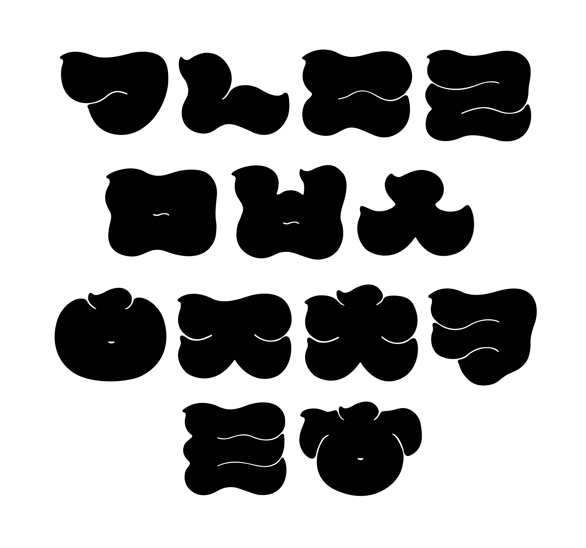

Ori-Jinhuk-Gui
Ori-Jinhuk-Gui is a typeface which is designed for Typography 1 class in 2018. It was inspired by the fluffy fur of the duck, the dense texture of mud, and the taste of grilling. It can be used for promoting food that stimulates appetite, or for attracting the attention of Korean and Japanese tourists because it has similar form with Japanese Edo characters. Among the Edo characters, Ori-Jinhuk-Gui is influenced by Cargo and Yosei, mainly used in advertisement.
오리진흙구이체
오리진흙구이는 2018년 타이포그래피1 수업에서 기획한 서체다. 오리의 탐스러운 볼륨감과 진흙의 질척한 질감, 그리고 구이의 단단한 맛으로부터 영감을 받아 제작했다. 식욕을 자극하는 물성을 이용하여 먹거리 홍보에 쓰이거나, 일본 에도 문자와 유사한 형태를 이용하여 한일 관광객의 이목을 끄는 용도로 쓰일 수 있다. 「오리진흙구이」는 에도 문자 중에서도 직선적이고 견고한 카고문자와, 광고물에 주로 쓰이는 요세 문자의 형태를 참고하였다.
